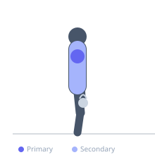
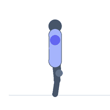

Exercise guide / Overhead Farmer's Walk (Bottoms-Up Kettlebell)
Overhead Farmer's Walk (Bottoms-Up Kettlebell)
The bottoms-up kettlebell overhead carry holds the kettlebell inverted (handle down, bell up) while walking. This grip requires the athlete to squeeze the handle forcefully and maintain precise wrist, elbow, and shoulder alignment to prevent the bell from falling, which dramatically increases rotator cuff activation compared to a standard overhead carry. The instability of the inverted bell creates continuous proprioceptive feedback, making this one of the most effective shoulder stability exercises available.
Primary muscles
infraspinatus
deltoid anterior
Secondary muscles
trapezius upper
transverse abdominis
Equipment
EZ-Curl Bar


Starting position
- Hold a kettlebell with the bell inverted (bottoms-up) at the shoulder. The handle points down, the bell sits on top of the fist. Squeeze the handle hard.
Setup
- Begin with a very light kettlebell — 8 or 12 kg is challenging for most athletes when inverted. Practice the stationary bottoms-up press before walking.
Steps
- Step 1: Press the inverted kettlebell overhead to lockout while maintaining the inverted position.
- Step 2: Walk a designated distance (10-20 metres) while keeping the bell balanced overhead.
- Step 3: Squeeze the handle continuously — the squeeze is what stabilizes the bell.
- Step 4: Keep the working shoulder packed and the wrist straight.
- Step 5: Lower, switch sides, and repeat.
Coaching cues
- Squeeze the handle like you mean it
- Wrist straight — no bend
- Shoulder packed, not shrugged
Breathing
- Breathe freely. Maintain a braced core throughout.
Range of motion
- Maintained overhead lockout for the full walking distance.
Tempo
- Continuous controlled walking
Common mistakes
- Too heavy — the bell will wobble and fall; use a much lighter kettlebell than expected
- Releasing the squeeze — the grip intensity is what prevents the bell from tipping
Safety
- Have a clear area in case the kettlebell falls
- Master the stationary bottoms-up press and hold before walking
Training
- rehabilitation: 1–1 reps
- rehabilitation: 2–4 sets
- Rest: {'rehabilitation': 90}